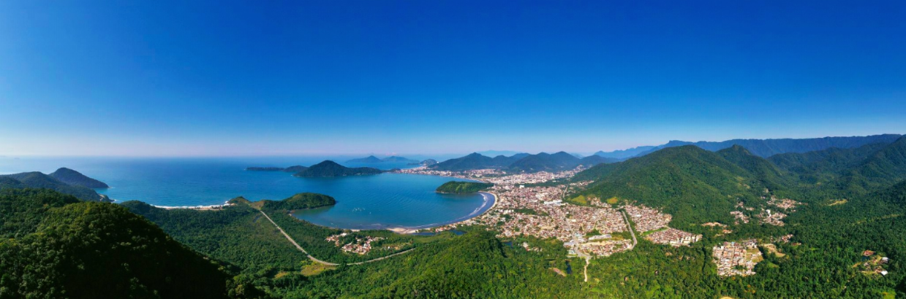

Ubatuba é um município do litoral norte de São Paulo, conhecido por suas praias paradisíacas, natureza preservada e pela forte cultura caiçara. A cidade possui mais de 100 praias e grande parte do seu território está localizada dentro do Parque Estadual da Serra do Mar, o que torna o lugar ainda mais especial por sua rica biodiversidade e belas paisagens naturais. Além de ser muito visitada por turistas e reconhecida como a “Capital do Surfe”, Ubatuba também tem uma história marcante e um ambiente acolhedor que conquista quem passa por lá.
Esse lugar é muito importante para mim, porque durante muitos anos passei minhas férias em Ubatuba e construí lembranças inesquecíveis. Conheci diversas praias, trilhas e lugares especiais da cidade, vivendo momentos que marcaram minha vida. Foi lá que aprendi a andar de bicicleta, de skate e também a surfar, criando uma conexão muito forte com o mar e com a natureza.